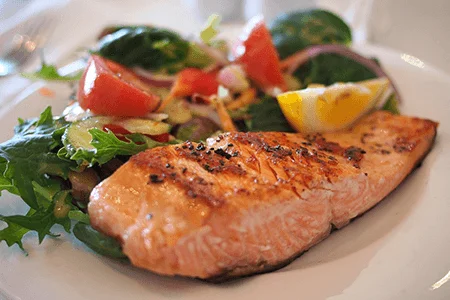

Lo Xiringuito La Cabanya
Un lloc aut√®ntic i únic on compartir un moment de relax amb companys, amics, fam√≠lia o desconeguts, perqu√® no? ... al mateix cor üíñ del Delta de l'Ebre , i dins mateix de la Badia dels Alfacs a La R√†pita .Especialitats regionals i tradicionals, tapes, plats degustaci√≥, menús, ... tot fet casol√† i de proximitat.A m√©s ... El Xiringuito et d√≥na acc√©s a la seva magn√≠fica terrassa, a les seves inigualables vistes de la badia i totes les nostres activitats de relax i esportives.Bons √†pats amb vista al Mediterrani, moments de relaxament, esports per a tots, compartir amb els teus ..., Gaudeix-ne ! Visquem junts xalant el moment present !
Àpats i Horaris
De matí manyana obrim les nostres portes a les 8 a.m., disposem de pàrquing per als nostres clients i també d'una rampa per varar embarcacions de poc calat i una manga màxima de 2 m.Gaudeix dels nostres àpats en la nostra acollidora terrassa perfumada de brisa marina, a tocar de l'abeurador"bar" i de la teca"cuina", tens per triar: esmorzars, dinars, tapes i berenars. Tanquem la cuina al públic a les 9 p.m. Normalment no fem sopars, però si sou un grup i desitgeu preparar un esdeveniment, ens podeu consultar la disponibilitat.

Esmorzars
Si sou una persona matinera, vine i gaudiràs de la tranquil·litat matinera del Delta, amb la mar plana com una bassa d'oli, amb una suau brisa mediterrània.Ideal per fer un bon esmorzar vora l'aigua i provar les nostres activitats nàutiques més gratificants.
La nostra carta

Dinars
Per l'hora de dinar, ja se sap, la mar salada i les activitats fan venir gana ! ... Doncs, un bon consell : reserveu la vostra taula per no quedar-se a peu.Surfeja per la nostra carta i arrambla't els teus plats preferits, escolliu entre entrants, degustacions, plats combinats, paellades, tapes, bocates i postres ...
La nostra carta
Tapes i Degustacions
Nosaltres estem orgullosos d'estar al teu servei sempre que tinguis un budell buit, oferir-te un capritxet culinari. Fes un cop d'ull a la carta on tens una varietat de plats i tapes per degustar a la teva disposició.Menja't un trocet de mar !
La nostra carta

Paellades
Nyaaaammm !!! Fes uns entrants per amanir les papil·les gustatives mentre es cuina la paella o la fideuà que estan per llepar-se els dits, fetes al caliu de la cuina amb el nostre brou casolà de peix. Amb el sentit del gust viuràs un esclat de sensacions !
La nostra carta